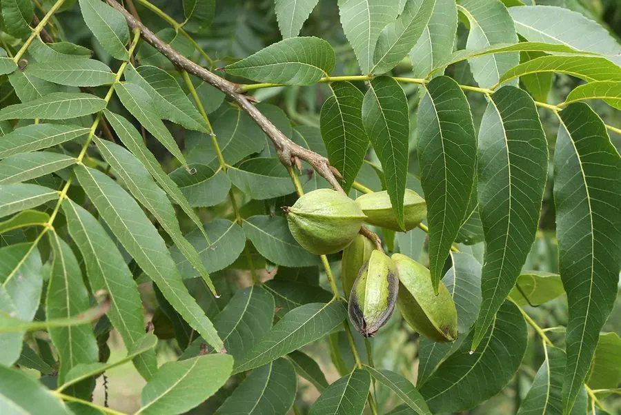

乔木 · 植物界
碧根果 Carya illinoinensis

胡桃科落叶大乔木，坚果壳薄仁厚、香气浓郁，俗称碧根果，原产美国南部，是著名的干果与油料树种。
- 分类
- 门被子植物门纲木兰纲目壳斗目科胡桃科属山核桃属
- 栖息环境
- 海拔 800 米以下的河谷、平原与丘陵，喜温暖湿润和充足阳光
- 地理分布
- 原产美国南部与墨西哥北部；中国浙江、云南、安徽、江苏等地引种
- 保护级别
- 暂无评估；中国未列入国家重点保护野生植物名录
物种志
碧根果为胡桃科山核桃属落叶大乔木，高 20–30 米，树冠宽大，树皮灰褐色并呈鳞片状开裂。奇数羽状复叶，小叶 9–17 枚，狭长披针形，边缘有锯齿。花单性，雌雄同株，雄花序为细长的葇荑花序；果实为坚果，外包 4 瓣开裂的绿色壳斗，坚果长椭圆形，壳薄而脆，内有 2 瓣富含油脂的种仁，风味香甜。
碧根果原产美国南部密西西比河流域及墨西哥北部，野生树高可达 50 米，寿命数百年，19 世纪开始人工栽培，美国佐治亚、得克萨斯是主产区。中国浙江、云南、安徽、江苏等地引种栽培，其中浙江临安的山核桃产业与碧根果同属不同种。它喜温暖湿润、阳光充足，适宜深厚疏松的沙壤土，嫁接苗 5–7 年结果。种仁含油率约 70%，可生食、烘焙、制糖果与榨油，是世界四大干果之一。
形态与习性
- 株高20–30 m，野生树可达 50 m
- 花期4–5 月，雄花序细长下垂
- 果期9–11 月，壳斗 4 瓣开裂
- 光照喜光，树冠下部需充足光照
- 水分喜湿润，生长期需水较多
- 土壤深厚疏松、排水良好的沙壤土
- 主要用途坚果烘焙食用、榨油，木材制家具
趣味知识
- 碧根果的含油率可达 70%，是含油量最高的坚果之一。
- 碧根果原产北美，英文名 pecan 源自阿尔冈昆语，意为“需要用石头砸开的坚果”。
- 碧根果树寿命可达数百年，美国仍有树龄超过 150 年的老果园。
- 中国浙江临安盛产的“山核桃”与碧根果同属山核桃属，但为不同物种。